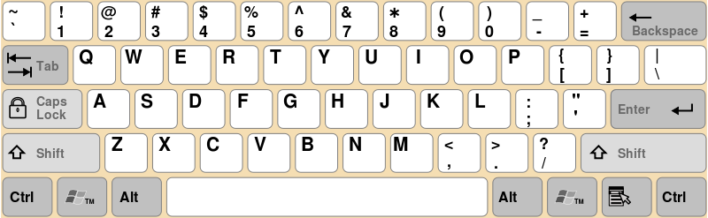

Le QWERTY est une disposition des touches de clavier de machine à écrire.
La disposition tire son nom des six premières touches de la rangée alphabétique supérieure.

Pour configurer votre clavier afin d'utiliser une autre langue ou une autre disposition, utilisez la méthode correspondant à votre version de Windows.
Cliquez sur démarrer, tapez intl.cpl dans la zone Rechercher et appuyez sur Entrée.
Sous l'onglet Claviers et langues, cliquez sur Modifier les claviers.
Cliquez sur Ajouter.
Développez la langue de votre choix. Par exemple, développez Français (France).
Développez la liste Clavier, activez la case à cocher Français (France), puis cliquez sur OK.
Dans les options, cliquez sur Afficher la disposition pour comparer la disposition avec le clavier réel.
Dans la liste Langue d'entrée par défaut, cliquez sur Français (France) – Français (France), puis cliquez deux fois sur OK.
Dans la boîte de dialogue Options régionales et linguistiques, cliquez sur OK.
Remarque La barre Langue s'affiche dans la barre des tâches. Lorsque vous maintenez le pointeur de la souris sur cette barre, une info-bulle indique la disposition de clavier active.
Cliquez sur la barre Langue, puis sur FR Français (France).
Vous pouvez personnaliser votre clavier pour une langue ou un format spécifique en modifiant sa disposition.Vous pouvez aussi configurer plusieurs claviers et jongler entre eux selon vos nécessités. Suivez les étapes suivantes pour ajouter une langue, pour en sélectionner une par défaut et pour ajouter plusieurs dispositions de claviers.
Ajouter une langue d'entrée :
Cliquez sur le menu Démarrer. et sélectionnez l’option « Paramètres ».
Sélectionnez « Horologe & langue ».
Cliquez dans la colonne gauche sur « région & langue ».
Sélectionnez « Ajouter une langue ».
Choisissez la langue que vous souhaitez ajouter, puis sélectionnez le pays correspondant à la langue.
Définir un clavier par défaut :
Cliquez sur le menu Démarrer. et sélectionnez l’option « Paramètres ».
Sélectionnez « Horologe & langue ».
Cliquez dans la colonne gauche sur « région & langue » .
Sous l'option « langues », cliquez sur la langue que vous désirez enregistrer par défaut et cliquez sur « définir comme valeur par défaut ».
Modifier la disposition du clavier.
Méthode 1 :
Cliquez sur le nom de la langue en bas à droite.
Sélectionnez la disposition de clavier de votre choix.
Méthode 2:
Cliquez sur le menu Démarrer . et sur la barre d'espace en même temps.
Pour configurer votre clavier afin d'utiliser une autre langue ou une autre disposition, utilisez la méthode correspondant à votre version de Windows.
Cliquezsur démarrer Bouton Démarrer, tapez intl.cpl dans la zone Rechercher et appuyez sur Entrée.
Sous l'onglet Claviers et langues, cliquez sur Modifier les claviers.
Cliquez sur Ajouter.
Développez la langue de votre choix. Par exemple, développez Français (France).
Développez la liste Clavier, activez la case à cocher Français (France), puis cliquez sur OK.
Dans les options, cliquez sur Afficher la disposition pour comparer la disposition avec le clavier réel.
Dans la liste Langue d'entrée par défaut, cliquez sur Français (France) – Français (France), puis cliquez deux fois sur OK.
Dans la boîte de dialogue Options régionales et linguistiques, cliquez sur OK.
Remarque La barre Langue s'affiche dans la barre des tâches. Lorsque vous maintenez le pointeur de la souris sur cette barre, une info-bulle indique la disposition de clavier active.
Cliquez sur la barre Langue, puis sur FR Français (France).
Lorsque vous branchez un clavier qui n’est pas immédiatement reconnu, l’Assistant réglages clavier s’ouvre automatiquement pour vous permettre d’indiquer le type de clavier (ANSI, JIS ou ISO). OS X en reconnaît trois types : ANSI, JIS (Japon) et ISO (Europe). Le clavier ANSI constitue le clavier standard 101 touches très largement utilisé aux États-Unis, en Amérique du Nord et dans bien d’autres régions du globe.
Si vous rencontrez des problèmes avec votre clavier, vous devrez peut-être indiquer manuellement à quel type il correspond. Vous pouvez utiliser les préférences Clavier pour ouvrir l’Assistant réglages clavier et indiquer votre type de clavier.
Choisissez le menu Pomme > Préférences Système, puis cliquez sur Clavier.
Cliquez sur « Changer de type de clavier ».
Lorsque l’Assistant réglages clavier apparaît, suivez les instructions affichées à l’écran.
Type here to see if the problem is solved